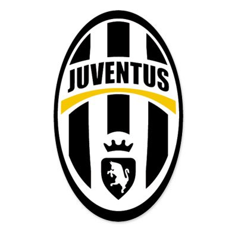
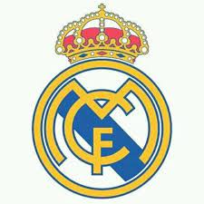

Juventus Football Club là một câu lạc bộ bóng đá chuyên nghiệp của Ý có trụ sở tại Torino, Piemonte. Được thành lập vào năm 1897, câu lạc bộ thi đấu trong bộ trang phục sọc trắng đen từ năm 1903 và chơi các trận đấu trên sân nhà ở nhiều sân vận động khác nhau quanh thành phố, mới đây nhất là Sân vận động Juventus có sức chứa 41.507. Với biệt danh Vecchia Signora ("Bà đầm già"), câu lạc bộ đã giành được 36 danh hiệu Serie A, 13 danh hiệu Coppa Italia, 9 danh hiệu Supercoppa Italiana, 2 Intercontinental Cup, 2 UEFA Champions League, 1 UEFA Cup Winners' Cup, 3 UEFA Cup, 2 UEFA Super Cup và 1 UEFA Intertoto Cup.
Website
Website slogan
Real Madrid Club là một câu lạc bộ bóng đá chuyên nghiệp của Tây Ban Nha có trụ sở tại Madrid. Ở đấu trường quốc nội, câu lạc bộ đã giành được 66 danh hiệu; kỷ lục 34 danh hiệu La Liga, 19 Copa del Rey, 11 Supercopa de España, một Copa Eva Duarte và một Copa de la Liga.Trong các giải đấu châu Âu và thế giới, Real Madrid đã giành được 26 danh hiệu; kỷ lục 13 danh hiệu Cúp C1 châu Âu/UEFA Champions League, hai Cúp UEFA, bốn Siêu cúp UEFA, họ cũng giành được kỷ lục bảy chức vô địch thế giới cấp câu lạc bộ.
Câu lạc bộ bóng đá Manchester United(MU hay MAN Utd) với biệt danh là "Quỷ Đỏ" là một câu lạc bộ bóng đá chuyên nghiệp có trụ sở tại Old Trafford, Đại Manchester, Anh. Câu lạc bộ đang chơi tại Giải bóng đá Ngoại hạng Anh, giải đấu hàng đầu trong hệ thống bóng đá Anh. Manchester United là một trong những câu lạc bộ thành công nhất tại Anh, giữ kỷ lục 20 lần vô địch bóng đá Anh, đoạt 12 Cúp FA, 5 Cúp Liên đoàn và giữ kỷ lục 21 lần đoạt Siêu cúp Anh. Câu lạc bộ đã giành được 3 Cúp C1 châu Âu/UEFA Champions League, 1 UEFA Cup Winners' Cup, 1 UEFA Europa league, 1 Siêu cúp châu Âu, 1 Cúp Liên lục địa và 1 FIFA Club World Cup. Trong mùa giải 1998–99, Manchester United trở thành đội bóng Anh đầu tiên và duy nhất đoạt cú ăn ba trong một mùa giải, gồm các chức vô địch Ngoại hạng Anh, cúp FA và UEFA Champions League